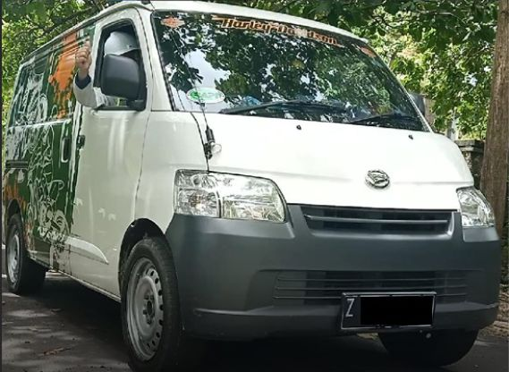
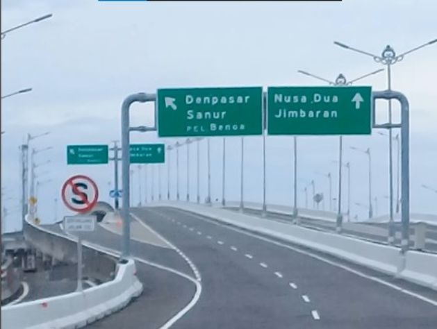
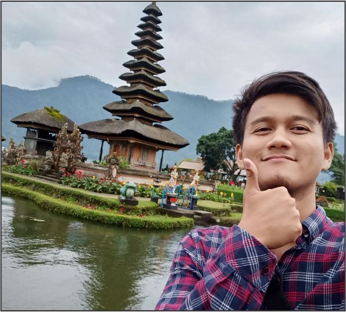
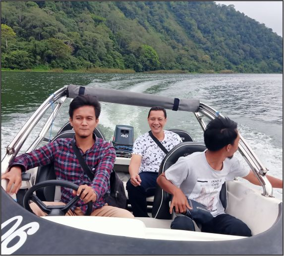
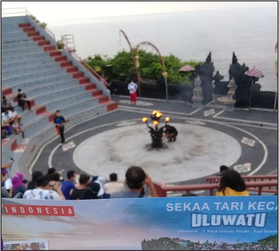
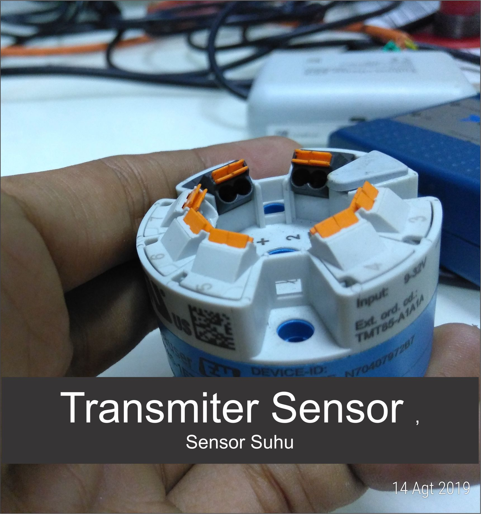

About Me
Saya lulusan dari Teknik Elektro Universitas Siliwangi dengan konsentrasi Sistem Kendali, menguasai pemrograman PLC maupun HMI, kendali Mikrokontroler dan pemasangan Instalasi penerangan dan Motor listrik. Pengalaman dirangkum dalam beberapa tahun kebelakang, berupa pengalaman berorganisasi Magang di industri dan pengalaman pekerjaan profesionalStaf Ahli Instrumet & Kontrol Program DOKTOR
Menjadi staf ahli Teknis dalam penelitian disertasi S3 Teknik Sipil Universitas Udayan Bali. Bertanggung jawab dalam perancangan pembuatan alat penunjang penelitian pengoprasian dan pengambilan data pengujian, menggunakan kontroler NI (National Instrument) dan software Labview | Maret 2021 - Sekarang
Cerita Project ke Bali
Berawal dari tawaran project ke Bali dari Dosen saya yaitu Pak Asep Andang , yang sudah saya anggap sebagai bapak sendiri, yang pada waktu itu saya belum lulus dari Teknik Elektro Universitas Siliwangi Tasikmalaya. Project tersebut akan dikerjakan ketika saya sudah lulus. “kata Pak Asep”. Lantas saya langsung menerimana, “bersyukur dong belum lulus saja sudah ada tawaran kerjaan, jalan-jalan ke Bali pula, mana nolak pikiran saya hehe”.
Tiga hari setelah percakapan dengan Pak Asep saya di pertemukan dengan Pak Iman Handiman , Dosen Teknik Sipil yang sedang melaksanakan disertasi S3 di Universitas Udayana Bali, menjelaskan program dan teknis project penelitian nantinya seperti apa, penelitian beliau bersifat eksperiment untuk mengetahui tekanan ke arah lateral tanah itu seperti apa akibat beban dinamis dan beliau berani membayar saya yang baru lulus dengan gajih yang lumayan sangat besar 6 digit anggka lo belum anggka depannya yang buat saya tambah bingung hehe dan katanya itu bersih tambah terdiam saya saat itu hehe, “ maklum biasanya dapet uang receh dari hari ke hari hehe”.
Dua minggu kemudian saya sudah Sidang Akhir dan dinyatakan LULUS dari teknik elektro Universitas Siliwangi pada tgl 17 Februari 2021, dan pada tanggal 20 Februarinya saya berangkat ke bekasi bersama rekan kerja sekaligus senior saya di teknik elektro Universitas Siliwangi, Namanya Kodrat senior yang menurut saya LEGENDA karena sering denger ceritanya tapi tak pernah tau orangnya seperti apa. Singkat cerita sudah dibekasi dan dipertemuakan dengan dengan orang yang yang katanya akan ngetraining saya mengenai alat yang digunakan untuk penunjang penelitian Pak Iman Handiman, namun pada saat itu saya bingung alatnya belum jadi, dan komponen nya juga pada tidak ada, menurut keterangan project ini sudah lama sekali tidak di lanjutkan karena pandemi Covid 19 dan akhirnya sebagian besar sensor dan kebutuhan lainnya pada hilang "ujar pemilik project yang membangun alat penunjang penelitian pak iman”.
Dan akhirnya saya dan abang saya bang kodrat yang menyelesaikannya, tentunya atas arahan penanggung jawab pemilik project sebelumnya,waktu itu saya benar-benar kewalahan membereskan alat penunjang penelitian ini karena harus di ngeprogram NI (National Instrument) dengan software labview yang sebelumnya belum pernah saya mencobanya, tuntutan pengerjaan alat harus beres dalam waktu 1 minggu, benar-benar pengalaman pertama bekerja di dalam tekanan waktu, pada saat itu, dengan modal menanyakan konsep dan seperti apa cara memprogram labview ke sahabat saya Moc Rizal melalui telpone, ditambah sedikit pemahaman saya dalam dunia percodingan, alhamdlilah itu alat keprogram seluruhnya dalam waktu 1 minggu tersebut, namun alat tersebut belum terkalibrasi dan memlilih di lanjut di Tasikmalaya, karena kehidupan di bekasi tidak enak tempat tidurnya hehe, “ kalo enak sih betah-betah saja”.
 Waktu keberangkatan ke Bali sudah mepet namun alatnya belum selesai 100%, alat itu belum terkalihrasi semuanya, dan belum perah di tes running sistem secara keseluruhan, namun ya apa yang harus di perbuat. Mau tidak mau harus berangkat ke Bali dan harus benar-benar dipastikan beres disana.Tanggal 26 Maret 2021 keberangkatan dari kota Tasikmalaya pada pukul 04:00 WIB menuju Jimbaran Bali. Perjalanan memakan waktu 2 hari lewat jalur darat, karena tidak memungkinkan naik pesawat “membawa peralatan tempur lho untuk penelitian disana ” beratnya sekitar 50 kg an ada lah…….ayangin Bro naik mobil dari Tasikmalaya ke Bali bawa alat beratnya sampe 50 Kg-an , foto disamping penampakan mobil yang dipake buat tour ke Bali, “ kata pemiliknya langsung dinamai Soleh katanya hehe”.
 Disepanjang perjalanan entah katro, nora / ndeso, saya benar-benar sangat menikmati keindahan kota bali dari awal masuk pelabuhan di gilimanuk sampe ke kosan yang ada di Jimbaran, tata daerah yang begitu asri dan masih kental dengan budayanya ditambah keindahan panorama-panorama alamnya yang masih terjaga yang buat saya TERPESONA dan nyaman melihatnya “yaelah terpesona hehe” saat itu tidak sama sekali tepikirkan sama alat yang belum 100% beres teruji semuanya berhenti sejenak melihat keindahan Bali.
Singkat cerita perjalanan dan peristirahatan sudah beres dan cukup, kewajiban dimulai kembali, keesokan pagi nya langsung diajak ke kampus undayana menemui promotor untuk kepentingan pemilihat lokasi pengujian yang direkomendasikan dan ketemulah titik yang disetujui di belakang fakultas hukum di bukit Jimbaran, alhamduliilah deket kosan, survey lokasipun dilakukan pada keesokan paginya,
“ ngeri lo bre itu kampus gede banget, kalo di tasik seluas gunung galunggung tuh ada lah :D “
Tanggal 2 April 2020 pelaksanaan pemasangan mulai dilakukan dari mulai penggalian tanah, marking lokasi untuk lintasan kendaraan, seting dan kalibrasi alat beres dalam waktu 3 hari, karena hari seninnya akan dilaksanakan terpengujian langsung yang disaksikan oleh promotor dan kopromotornya. Percaya atau tidak itu alat sudah terpasang belum sempet pengujian alat lagi keseluruhan dan langsung di tes depat promotor dan kopromotor, gak ngeri-ngeri gimana tuh, gimana kalo ada masalah teknis maupun nonteknis, untungnya alhamdulilah masih bisa di handel waktu itu dan berjalan lancar.
 Settinga parameter instument, kemudian pengkalibrasian dengan membandingkan data hasil pembacaan sensor dengan timbangan yang sudah terkalibrasi sebelumnya
Settinga parameter instument, kemudian pengkalibrasian dengan membandingkan data hasil pembacaan sensor dengan timbangan yang sudah terkalibrasi sebelumnya

Menggali lubung sedalam 1,8 meter dengan lebar 1 meter persegi, dikerjakan oleh 2 orang dalam 2 hari kerja dan Marking lintasan dengan menggunakan Pilok dan menamai setiap jarak lintasannya sejauh 50 cm, 100 cm dan 150 cm
Pengujian dilakukan dengan melewatkan truck double dengan berat 18 ton kelereng tebing karang dan melihat respone pergerakan tanah lateral yang dibaca oleh sensor load cell, di proses oleh NI (National Instrument) dan di record melalui labview dengan rate scan 10ms, data tersebut langsung tersimpan ke excel dan dapat di asistensikan secara langsung ke promotor dan alhamdulilah data tersebut di akui dan lanjut untuk dianalisis….. yeayyy alhamdulilah bahagia sekali waktu itu, dan langsung diajak kami tuk Keliling Bali…
Berikut ini buktinya bahwa saya pernah keliling Bali , bukan editan ya hehe
  Terimakasih sudah membaca cerita pengalaman saya ketika ada kerjaan di bali, mungkin tidak begitu penting cerita ini saya tulis di portofolio namun ya seadanya seperti ini saya mencoba membuat sebuah rekam jejak pengalaman di dunia digital.
Salam Manja
Rendi Priyatna, S.T
Asisten Dosen Praktikum
Membantu dosen dalam melaksanakan pembelajaran praktikum di Jurusan Teknik Elektro Universitas Siliwangi Tasikmalaya, Meliputi Praktikum PLC (Programable Logic Controller) dan Dasar Sistem Kendali | Agustus 2019 - Febuari 2021
Staf Teknis Surveyor CV. Dwi Tunggal Mandiri
Menjadi TIM surveyor dalam mensurvey kebenaran dan kelayakan pemasangan instalasi listrik terhadap gambar perencanaan, untuk kepentingan Sertifikasi Laik Fungsi di proyek pembangunan Resto & Caffee Mangkubumi park Tasikmalaya | September - Oktober 2020
Cerita Tim Surveyor
 Salam Manja Buat kita semua, pada artikel ini saya bercerita tentang pengalaman menjadi staff teknis surveyor di CV. Dwi Tunggal Mandiri Tasikmalaya. Berawal dari ajakan proyek untuk SLF ( sertifikasi Laik Fungsi ) sebuah gedung atau bangunan, dari Dosen yang paling dekat dengan saya yaitu Bapak Asep Andang mengajak untuk ikut gabung dalam tim survey pembangunan Resto and Cafe di Mangkubumi Park .
Salam Manja Buat kita semua, pada artikel ini saya bercerita tentang pengalaman menjadi staff teknis surveyor di CV. Dwi Tunggal Mandiri Tasikmalaya. Berawal dari ajakan proyek untuk SLF ( sertifikasi Laik Fungsi ) sebuah gedung atau bangunan, dari Dosen yang paling dekat dengan saya yaitu Bapak Asep Andang mengajak untuk ikut gabung dalam tim survey pembangunan Resto and Cafe di Mangkubumi Park .
Mensurvei kelayakan pemasangan apakah sudah sesuai dengan standar SNI atau belum dan membandingkan kebenaran pemasangan titik – titik beban yang terpasang dengan gambar perancangan yang sudah disepakati sebelumnya, menganalisis kebutuhan daya yang terpasang dengan yang di suplay dari PLN dan pengecekan pemasangan penangkap petir dan grounding
Pengalaman tempat kedua yaitu pembangunan pusat pembelanjaan PD Mulya Sen Sen Cikurubuk Tasikmalaya, pembangunan gedung 4 lantai yang mana lantai 1 / basement untuk keperluan parki kendaraan , Lantai dua dan 3 tempat perbelanjaan, dan di lantai 4 gudang kebutuhan toko, parameter-parameter pengcekan sama dengan SLF bangunan pertama yaitu pemasangan titik beban sesuai dengan gambaran perencanaan sebelumnya atau tidak, pemasangan, alat- alat yang terpasang , proteksi gedung dan grounding yang sudah sesuai standar SNI atau tidaknya
Terimakasih sudah mau membaca pengalaman saya di bidang surveyor ketika menjadi Tim di staff teknis CV.Dwi Tunggal Mandiri Tasikmalaya
Salam Manja
Rendi Priyatna
Program Kerja Praktek | Lenzing
Program Magang dalam kegiatan Kerja Praktek. Mengkalibrasi transmiter-transmiter sensor yang ada di industi Kimia seperti PH, TDS, Pressure, Suhu, Level, dan membantu mem-program PLC serta mendesain SCADA di Wonderware inTouch, bersama dengan 5 orang Tim lainnya. | Agustus - September 2019
Cerita Kerja Praktek
Salam Manja, sehat dan bahagia semuanya, dalam cerita pengalaman kali ini mungkin yang penulis rasa sangat bahagia karena kegiatan saya bercampur dengan bibit-bibit cinta “ lebai dikit gpp ya hehe”
Semester genap tahun 2019 ada kegiatan pelaksanaan Kerja praktek dilapangan atau kita sering singkat KP (Kerja Praktek) pada saat itu sebetulnya ada rencana tersendiri mau KP dimana yang sesuai fashion, namun perusahaan yang di minati tidak menerima mahasiswa KP pada saat itu dikarenakan projet bulan-bulan itu lagi tidak ada, oleh karena mencari lagi dan konsultasi lagi dengan dosen, mencari perusahaan mana yang dapat menerima mahasiswa kp yang sesaui dengan minat saya dengan menghubingi alumni-alumni , dan ada tawaran buat coba mengirimkan proposal ke PT.SPV Lenzing Purwakarta atas rujukan dosen tersebut.
Dua minggu kedepannya ALHAMDULILAH saya dinyatakan diterima untuk dapat melaksanakan kerja praktek di PT. SPV Lenzing tentunya bareng temen hidup saya hehe, di dalam surat tersebut dituliskan tgl 5 agustus 2019 sudah mulai masuk kerja praktek, dan pada saat itu saya dan temen hidup saya bergegas persiapan keberangkatan “ yaey asik akhirnya bisa KP bareng yang ku suka” (lebai nya diri ini hehe).
Pelaksanaan Kerja praktek dilaksanakan minimal 30 hari kerja menurut panduan KP dijurusan Teknik Elektro Universitas Siliwangi pada saat itu namun pelaksanaan nya bisa kurang dari itu hehe, saya kerja praktek paling 20 hari kerja, jadi sekitar 1 bulanan kali dihitung sama hari sabtu dan minggunya. Pelaksanaan kerja praktek disana saya ditempatkan di departement Instrument bersamaan dengan 5 orang lainnya dari politeknik dan universitas berbeda. Yang dipelajari saat kerja praktek di departement instument tentunya tentang semua yang berhubungan dengan instrumentasi di perusahaan tersebut. PT. SPV Lenzing merupakan industri kimia, dimana mayoritas semua pengolahannya menggunakan parameter kimia, industri ini memproduksi bahan dasar dari kayu menjadi serat viscose yang mana serat viscose tersbut merupakan bahan dasar dari pembuatan seperti kain, kapas, tisu dll yang sejenisnya.
Di department instumen saya belajar bagaimana cara mengkalibrasi sensor, maintance transmiter, control valve, maintance kualitas pembacaan sensor, menganalisis dan membaca perubahan yg dihasilkan dari sensor selama 2 minggu pertama dan untuk dua minggu kedepatnnya saya di training mengenai SCADA menggunakan software Wonderware inTocuh. Pada saat itu pelaksanaan training dilakukan secara simulasi bagaimana cara mengubungkan atau mengkomunikasikan sensor ataupun transmiter dengan PLC, waktu itu project simulasinya tentang pengisian tangki dan kontrol valvenya. Berikut beberapa dokumentasi saat pelaksanaan kerja praktek di PT.SPV Lenzing Purwakarta

Okh iya dosen yang sering saya ceritakan tadi diatas itu bernama Asep Andang, beliau dosen yang menurut saya paling tanggung jawab, perhatian dan humble kepada seluruh mahasiswa, jadinya saya benar-benar betah ketika diskusi maupun curhat masalah perkuliahan ataupun pribadi kepada beliau, dan alumni yang membantu saya masuk ke P.T SPV Lenzing Purwakarta itu bernapa Irvan berkat beliau pula saya bisa masuk dan ikut melaksanakan kerja praktek disana, ada juga selain pak irvan itu ada pak entis orang instrument project dan pak Agus kepala pimpinan departement Elektrik. Sangat bersyukur sekali dapat kenal dengan orang-orang hebat seperti beliau dan sangat menginspirasi sekali karakter-karakternya, Terimakasi semuanya semoga perbuatan kebaikan kepedulian nya dibalas dengan hal yang lebih baik, aamiin,
Oh iya Terimakasih juga ya kepada yang sudah membaca cerita pengalaman kerja praktek saya di P.T SPV Lenzing Purwakarta
Salam Manja
Rendi Priyatna, S.T
Mentor & Pelatih Komunitas Robotik MAN 2 TASIKMALAYA
Mentoring siswa komunitas robotik dalam mengenal dan belajar mengenai mikrokontrol, IoT (Internet of Things) dan logika-logika pemrograman dalam membangun robot-robot atau sistem sederhana yang berguna dilingkungan sekitarnya | Agustus 2017 - September 2020
Himpunan Mahasiswa Elektro Universitas Siliwangi | Anggota Departement
Pengalaman berorganisasi pertama, dilingkungan Kampus bersama Keluarga HME universitas siliwangi tahun 2018/2019, diamanahi untuk memegang tanggung jawab untuk mewadahi semua kreatifitas mahasiswa elekto dalam bidang komunitas kontrol ,seni, olah raga dan adventure | Februari 2018 - Februari 2019
What I’m good at?
Beberapa bidang ini yang membentuk karakter saya sampai saat ini, menyukai dan menguasai beberapa bagian dari dunia instrumentasi dan kontrolPLC & (Programable Logic Controller)
Programing PLC (Programable Logic Controller) dan HMI (Human Machine Interface) dan wiring nya untuk kebutuhan sekala Industri.
Microkontroller
Membuat Sistem mikrokontrol, mulai dari mendesain PCB, programing dan wiring, sampai dapat dimonitoring dan dikontrol
SCADA & (Supervisory Control and Acquisition Data)
Merencanakan & membuat sistem yang dapat terakuisisi dalam local server maupun internet. Untuk kebutuhan analisis dan report data.
Instalasi & Kendali Motor Listrik
Merencanakan dan memasang intalasi listrik untuk kepentringan kendali motor listrik maupun instalasi
My Work
Berikut ini beberapa dokumentasi kegiatan berorganisasi, project yang pernah dikerjakan, dan pengalaman lainnyaJUARA I MRC 2019
Menjuarai JUARA I MRC (Madrasah Robotic Competition) yang diselenggarakan oleh Kementrian Agama di Mall Grand City Surabaya, 2019 | Mentor & Pelatih informasi lebih lanjut kunjungi website berikut: Website Resmi MAN 2 TASIKMALAYA | detik.comTIM Kerja Praktek
program Kerja Praktek yang diselenggarakan di PT.South Pacific Viscose Purwakarta Jawabarat ditempatkan di Depertement Instument bagian instrumentasi dan control.Project Front end WEB
Project Tugas Akhir saya yang berjudul Model Sistem Water Treatment Plant Menggunakan PLC berbasis Wireless Project ini bagian interface website di Tugas Akhir, untuk lebih jelasnya kunjungi link berikut : Klik disini

{kind=link}
{kind=link}
{kind=link}
{kind=link}
{kind=link}
{kind=link}
{kind=link}
{kind=link}
{kind=link}